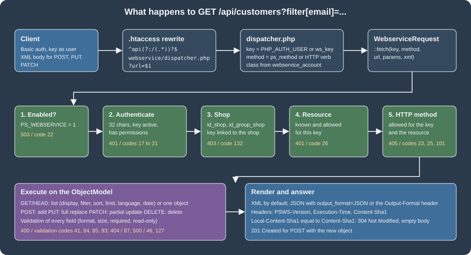

Webservice API
|
This content was generated with the assistance of AI and should be verified against the official documentation before being relied on in production. |
PrestaShop has had a REST-style API since version 1.4: the Webservice, served at /api on every shop. It exposes close to
eighty resources, one for each core entity (customers, products, orders, carts, categories, groups, stock, CMS pages and
so on), with the four write verbs plus HEAD, XML by default and JSON for reading. Authentication is a single secret key,
the permissions are a matrix of resource by HTTP method, and the whole thing is a thin layer over the ObjectModel
classes, which is why the same validation rules, the same required fields and the same limits apply as in the back
office. Since PrestaShop 9.0 a second API exists, the OAuth2-based Admin API covered in
Admin API. The Webservice is not deprecated and it is the interface that most
existing integrations (ERP, marketplaces, price lists, stock synchronisation) use, so it stays important for stores that
upgrade from 1.7 or 8.x.
This page was written against PrestaShop 9.2.0 (released 2026-09-30; the responses carry the header PSWS-Version: 9.2.0)
and the official documentation was checked on 2026-10-27. Every request and response below was run against PrestaShop
9.2.0 Docker shops: the key, group, customer, filter, error and extension examples ran in the shared test shop at
http://localhost:8080, and the multistore, address, cart and order examples ran in a second, throw-away installation at
http://localhost:8091. The running example is Pocket Coffee: a key for the "coffee club" customer data, a customer in
the club, reads of the catalog, an order created from outside, and a custom roast_batches resource that publishes the
roast date of each batch. Keys in the examples are read from the environment variable PS_WS_KEY; the keys of the test
shops are throw-away values and are not reproduced.
Webservice or Admin API
| Webservice | Admin API | |
|---|---|---|
Endpoint |
|
|
Introduced |
PrestaShop 1.4 |
PrestaShop 9.0 |
Authentication |
A 32-character key sent as the HTTP Basic user name, no password |
OAuth2 client credentials, short-lived bearer tokens with scopes |
Permissions |
Resource by HTTP method, per key (and per shop) |
Scopes such as |
Formats |
XML in and out, JSON out only |
JSON in and out |
Built on |
|
API Platform 3 over the CQRS domain |
Extension |
|
API resources with |
Status in 9.2.0 |
Stable, unchanged for years |
Shipped and enabled; the OpenAPI document reports version |
Use the Webservice when an existing integration already speaks it or when a resource you need is only there; prefer the Admin API for new integrations that need scoped, expiring credentials. Both can run side by side.
Source: PrestaShop devdocs: Webservice
Enabling the Webservice
The Webservice is controlled by the configuration key PS_WEBSERVICE. In the Docker image of 9.2.0 it is already 1 after
the installer finishes; on other installs it is 0 and requests answer 503 with error code 22 (The PrestaShop
webservice is disabled). Switch it on in Advanced Parameters > Webservice (Enable PrestaShop’s webservice), or in code:
<?php
Configuration::updateValue('PS_WEBSERVICE', 1);The same page of the back office has a second switch, Enable CGI mode for PHP, stored in PS_WEBSERVICE_CGI_HOST. It is
meant for hosts where PHP runs as CGI and the web server does not hand over the Authorization header; enable it only if
PHP is not an Apache module. The documentation gives two alternatives for Apache in .htaccess:
CGIPassAuth On
# or
SetEnvIf Authorization "(.*)" HTTP_AUTHORIZATION=$1The endpoint is not a real folder. The .htaccess file written by PrestaShop contains this rule, and the dispatcher also
reads the variable REDIRECT_HTTP_AUTHORIZATION for hosts that rename the header:
RewriteRule ^api(?:/(.*))?$ %{ENV:REWRITEBASE}webservice/dispatcher.php?url=$1 [QSA,L]The rule needs mod_rewrite and AllowOverride All for the shop folder; with Nginx the equivalent location /api
rewrite has to be written by hand (not run here). Three more requirements come from the back office help text: URL
rewriting must work, the server must accept the six methods GET, POST, PUT, PATCH, DELETE and HEAD, and, if the
site uses a reverse proxy, the proxy must pass Authorization and the HTTP verbs through.

Keys and permissions
Creating a key
In the back office open Advanced Parameters > Webservice and choose Add new webservice key. A key has these properties:
| Property | Meaning |
|---|---|
Key |
The secret. Exactly 32 characters; the Generate button makes a random one. Any other length is rejected with |
Key description |
Free text for the merchant ("Coffee club sync"). Not shown to the client. |
Status |
A disabled key answers |
Permissions |
A matrix: one row per resource and one column per verb, labelled |
Shop association |
Only visible in multistore mode: the shops where the key works. |
The key is stored in ps_webservice_account (key, description, active, and the columns class_name, is_module and
module_name), the permissions in ps_webservice_permission (resource, method, id_webservice_account) and the shop
association in ps_webservice_account_shop. The back office page runs the CQRS commands AddWebserviceKeyCommand(key,
description, status, permissions, associatedShops) and EditWebserviceKeyCommand. The same can be done from PHP with the
WebserviceKey class, which is what the commands wrap:
<?php
require '/var/www/html/config/config.inc.php';
$key = new WebserviceKey();
$key->key = bin2hex(random_bytes(16)); // 32 characters, as required (the test used a fixed throw-away value)
$key->description = 'Pocket Coffee club sync';
$key->active = 1;
$key->save();
$all = ['GET' => 1, 'POST' => 1, 'PUT' => 1, 'PATCH' => 1, 'DELETE' => 1, 'HEAD' => 1];
WebserviceKey::setPermissionForAccount($key->id, [
'customers' => $all,
'groups' => $all,
'products' => ['GET' => 1], // read-only
'languages' => ['GET' => 1],
]);
$key->associateTo([1]); // shop ids (needed even without multistore)Only the keys of the array of methods matter, the values are ignored. The call to associateTo() was required in the test:
without a row in ps_webservice_account_shop the key is refused for the shop with a 403 and code 132. The first
request after the script is the root listing, which prints only the resources the key may use, with the allowed verbs as
attributes:
curl -s -u "${PS_WS_KEY}:" http://localhost:8080/api/<prestashop xmlns:xlink="http://www.w3.org/1999/xlink">
<api shopName="PrestaShop">
<customers xlink:href="http://localhost:8080/api/customers" get="true" put="true" post="true" patch="true" delete="true" head="true">
<description xlink:href="http://localhost:8080/api/customers" get="true" put="true" post="true" patch="true" delete="true" head="true">
The e-shop's customers</description>
<schema xlink:href="http://localhost:8080/api/customers?schema=blank" type="blank"/>
<schema xlink:href="http://localhost:8080/api/customers?schema=synopsis" type="synopsis"/>
</customers>
<products ... get="true" put="false" post="false" patch="false" delete="false" head="false">
...Rules for a safe key
-
Give each integration its own key and the minimum permissions. The documentation says to keep the "all rights on every resource" key for the administrator only. A key that can read
customerscan read the password hash of every customer. -
The key is the only secret: there is no password and no expiry. Anyone who has the key has the permissions.
-
New resources do not appear in existing keys. The
roast_batchesresource added by the module in Extending the Webservice was invisible to the test key untilsetPermissionForAccount()was called again with the new resource. -
Rotate a key by creating a second one, switching the client and deleting the first.
-
Restrict the
/apilocation by IP in the web server when the clients are known, and serve it over HTTPS only (see Authentication).
Authentication
The key is the HTTP Basic user name; the password stays empty. These forms all returned 200 in the test shop:
# 1. Basic authentication handled by curl (user name = key, empty password)
curl -s -u "${PS_WS_KEY}:" http://localhost:8080/api/groups/4
# 2. Explicit Authorization header: Basic base64("key:")
AUTH=$(printf '%s:' "${PS_WS_KEY}" | base64)
curl -s -H "Authorization: Basic ${AUTH}" http://localhost:8080/api/groups/4
# 3. Key in the URL (works, but ends up in browser history and server logs)
curl -s "http://${PS_WS_KEY}@localhost:8080/api/groups/4"
# 4. Query parameter ws_key (read by the dispatcher; ends up in logs too)
curl -s "http://localhost:8080/api/groups/4?ws_key=${PS_WS_KEY}"The official documentation recommends the Authorization header and warns against the key in the URL. The ws_key
parameter is not described in the guides; it is read in webservice/dispatcher.php when no Basic credentials are present
and behaves like the key in the URL.
When authentication fails the answer is 401 with a WWW-Authenticate: Basic realm="Welcome to PrestaShop Webservice,
please enter the authentication key as the login. No password required." header. Without any credentials the dispatcher
answers with a plain 401 Unauthorized text body and no XML. Preflight OPTIONS requests are answered with
Access-Control-Allow-Headers: Authorization, Content-Type and the text 200 OK, so a browser client on another origin can
start, although the actual response does not carry CORS headers for the data and a server-side proxy is the normal choice.
| HTTP status | Code | Message |
|---|---|---|
401 |
none |
No credentials at all: |
401 |
17 |
|
401 |
18 |
|
401 |
20 and 21 |
|
503 |
22 |
The Webservice is disabled |
403 |
132 |
|
Because the credential travels with every request, serve /api over HTTPS and keep it out of logs and shared notebooks.
Anatomy of a request
URLs, resources and methods
Every resource has a plural name and follows the same two shapes:
-
/api/<resources>lists the objects, and acceptsPOSTto create one; -
/api/<resources>/<id>reads, replaces (PUT), partially updates (PATCH) or deletes (DELETE) one object.
The root /api/ lists the resources the key may use. A few resources are restricted: search, stock_movements, stocks and the
supply order resources are read-only, stock_availables can be read and updated but not created or deleted, and warehouses
has no DELETE. A few are special: images and attachments handle file uploads, search runs the shop search. The complete table of resources and the allowed verbs
is in the reference page; the names used in the examples below are groups, customers, addresses, carts, orders,
order_histories, products, languages, shops and configurations.
HTTP verbs map to CRUD:
| Verb | Operation | Behaviour |
|---|---|---|
|
Read |
Returns one object or a list. |
|
Create |
The body is the XML of the new object without |
|
Replace |
The body is the whole object including |
|
Partial update |
The body has |
|
Delete |
|
A client that can only send GET and POST can set ps_method=PUT (or PATCH, DELETE) as a query or form parameter;
the dispatcher uses it as the method. The permission check applies to the method after the override.
Schemas
Every resource describes itself. ?schema=blank returns an empty object to fill in for a POST, and ?schema=synopsis adds
the validation rules: required, maxSize, format (the name of a Validate method such as isEmail), read_only and
notFilterable. The synopsis of groups in 9.2.0:
<prestashop xmlns:xlink="http://www.w3.org/1999/xlink">
<group>
<reduction format="isFloat"></reduction>
<price_display_method required="true" format="isPriceDisplayMethod"></price_display_method>
<show_prices format="isBool"></show_prices>
<date_add format="isDate"></date_add>
<date_upd format="isDate"></date_upd>
<name required="true" maxSize="32" format="isGenericName">
<language id="1" xlink:href="http://localhost:8080/api/languages/1" format="isUnsignedId"></language>
<language id="2" xlink:href="http://localhost:8080/api/languages/2" format="isUnsignedId"></language>
</name>
</group>
</prestashop>The synopsis of customers marks passwd, lastname, firstname and email as required, last_passwd_gen and
secure_key as read-only and lists the associations (the groups of the customer) after the fields. Always start a new
integration by reading the schemas of the resources it touches: the blank schema is the safest template for a
POST, because it contains every field and every association in the right order.
Reading: display, filter, sort, limit, language, date
All read parameters are query-string parameters. Because they contain square brackets, use curl -g (globbing off) or
the brackets are interpreted by curl; one of the test calls returned nothing until -g was added.
| Parameter | Values | Example and result |
|---|---|---|
|
|
|
|
|
Equal, one of, interval, begins with, ends with, contains, not equal, greater than, less than. |
|
|
The direction is the suffix after the last underscore. |
|
|
|
|
|
Only the translated values for those languages; a single language turns localized fields into plain strings. |
|
|
Required for the filters and sorts on date fields. |
|
See below |
Computes a price with taxes or group for products and combinations. |
|
|
Schemas. |
|
|
Output format. |
|
ids |
Multistore context. |
|
|
With |
|
|
Override of the HTTP verb. |
These were run in the shared test shop against the customer created for the club (id 3; the test copy used the address pcfg-ada@example.test, shown here as ada@example.test):
KEY="${PS_WS_KEY}"
B=http://localhost:8080/api
# equal, with display and JSON
curl -s -g -u "$KEY:" "$B/customers?display=[id,firstname,email]&filter[email]=[ada@example.test]&output_format=JSON"
# {"customers":[{"id":3,"firstname":"Ada","email":"ada@example.test"}]}
# ends with a domain
curl -s -g -u "$KEY:" "$B/customers?display=[id,email]&filter[email]=%[example.test]&output_format=JSON"
# interval of ids, sorted descending, first row only
curl -s -g -u "$KEY:" "$B/customers?display=[id,email]&filter[id]=[1,3]&sort=[id_DESC]&limit=0,1&output_format=JSON"
# {"customers":[{"id":3,"email":"ada@example.test"}]}
# not equal, and greater than
curl -s -g -u "$KEY:" "$B/customers?display=[id,email]&filter[email]=![ada@example.test]&output_format=JSON"
curl -s -g -u "$KEY:" "$B/customers?display=[id,email]&filter[id]=>[1]&output_format=JSON"
# date range (the end of the interval is exclusive)
curl -s -g -u "$KEY:" "$B/customers?display=[id,email,date_add]&filter[date_add]=[2026-10-27%2016:00:00,2026-10-27%2017:00:00]&date=1&output_format=JSON"
# one language, then two
curl -s -g -u "$KEY:" "$B/groups/4?language=2&output_format=JSON"
# {"group":{"id":4,"reduction":"10.00","show_prices":"1",...,"name":"Club del Café"}}
curl -s -g -u "$KEY:" "$B/groups/4?language=[1,2]&output_format=JSON"
# ... "name":[{"id":"1","value":"Coffee Club"},{"id":2,"value":"Club del Café"}]All of them returned the expected rows. Details worth remembering from the runs:
-
displayandfilteron the list apply to fields of the resource. A wrong field name is a400with code 35 (display) or 32 (filter) and the message lists every valid field. A wrongsortfield is code 38 with the messageUnable to filter by this field. However, these are available: .... A wronglimitis code 39. -
limit=abcreturned an empty list with status200instead of an error. -
The date filter needs
date=1; the documentation says the first end of the range is inclusive and the second exclusive. -
displaydoes not work for a single object. Usedisplaytogether withfilter[id]=[3]to get one object with fewer fields. -
A response obtained with a partial
displaycannot be used as the body of aPUT, but can be for aPATCH. -
language=2on a localized field returns a plain string;language=[1,2]returns the array of objects. The same field is an array of{id, value}objects in JSON and a list of<language id="n">nodes in XML.
The price parameter was also run. The query price[p_incl][use_tax]=1&price[p_club][group]=4&price[p_club][use_tax]=1
added the two aliases p_incl and p_club to the product with the prices calculated by the price engine. The options are
country, state, postcode, currency, group, quantity, product_attribute, decimals, use_tax,
use_reduction, only_reduction and use_ecotax; the alias is a name you choose. Giving the parameter in a flat form
such as price[x]=[use_tax=1] ended in a PHP fatal error in the test shop, so use the nested form.
XML and JSON
Output is XML unless JSON is requested with output_format=JSON or io_format=JSON in the query string, or the header
Output-Format: JSON or Io-Format: JSON. The value is case sensitive: output_format=json in lower case silently returned
XML. Input is XML only: since PrestaShop 8.1 the Webservice can output JSON but cannot read it. A POST with a JSON body
returned 500 with error code 127 (String could not be parsed as XML). A body that starts with xml= has that prefix
removed, a leftover from HTML form posts.
A list in XML has one empty node per object, with the id and a link; a list in JSON has the same nodes, with display
giving the fields:
<prestashop xmlns:xlink="http://www.w3.org/1999/xlink">
<customers>
<customer id="1" xlink:href="http://localhost:8080/api/customers/1"/>
<customer id="2" xlink:href="http://localhost:8080/api/customers/2"/>
<customer id="3" xlink:href="http://localhost:8080/api/customers/3"/>
</customers>
</prestashop>Localized fields differ between the two formats: XML repeats <language id="n"> nodes under the field, while JSON uses an
array of {"id":..,"value":..} objects, or a plain string when only one language is returned. With one language
installed JSON always returns the plain string.
Caching with Content-Sha1
Every answer carries a Content-Sha1 header with a hash of the body (available since 8.0). A client stores it and sends it
back as Local-Content-Sha1 on the next request. If the content did not change, the answer is 304 Not Modified with an
empty body:
SHA=$(curl -s -D - -o /dev/null -u "${PS_WS_KEY}:" "http://localhost:8080/api/groups/4?output_format=JSON" | tr -d '\r' | awk -F': ' 'tolower($1)=="content-sha1"{print $2}')
curl -s -i -u "${PS_WS_KEY}:" -H "Local-Content-Sha1: ${SHA}" "http://localhost:8080/api/groups/4?output_format=JSON" | head -1
# HTTP/1.1 304 Not ModifiedThe dispatcher builds the full answer and compares the hash, so the saving is bandwidth and client work, not server time.
Writing
Create with POST
The workflow is: read the blank schema, fill it in, send it. Creating the Coffee Club group and a customer who belongs to it:
<?xml version="1.0" encoding="UTF-8"?>
<prestashop xmlns:xlink="http://www.w3.org/1999/xlink">
<group>
<reduction>10</reduction>
<price_display_method>0</price_display_method>
<show_prices>1</show_prices>
<name>
<language id="1">Coffee Club</language>
<language id="2">Club del Café</language>
</name>
</group>
</prestashop>curl -s -i -u "${PS_WS_KEY}:" -X POST --data-binary @group.xml http://localhost:8080/api/groups
# HTTP/1.1 201 Created ... <group><id><![CDATA[4]]></id> ...Then the customer, with id_default_group and the associations block (the order of the children follows the schema):
<prestashop xmlns:xlink="http://www.w3.org/1999/xlink">
<customer>
<id_default_group>4</id_default_group>
<id_lang>2</id_lang>
<passwd>a-long-random-password</passwd>
<lastname>Lovelace</lastname>
<firstname>Ada</firstname>
<email>ada@example.test</email>
<newsletter>0</newsletter>
<active>1</active>
<associations>
<groups>
<group><id>3</id></group>
<group><id>4</id></group>
</groups>
</associations>
</customer>
</prestashop>The answer was 201 Created, customer id 3, id_default_group linked to groups/4 and id_lang to languages/2. The plain-text
passwd came back as a bcrypt hash: the setter setWsPasswd hashes it. Do not put whitespace or line breaks inside a
value element (for instance <id>\n 3\n</id>), the documentation warns that it can break the resource; indentation between
elements is fine.
Update with PUT or PATCH
PUT replaces the object, so every field has to be sent and anything missing is reset. This was visible with the custom
roast_batches resource: a PUT that carried only sku, roast_date and weight_kg set id_product to 0 and emptied the
translated note in both languages. PATCH changes only what it carries:
curl -s -u "${PS_WS_KEY}:" -X PATCH --data-binary @patch.xml http://localhost:8080/api/customers/3<prestashop xmlns:xlink="http://www.w3.org/1999/xlink">
<customer>
<id>3</id>
<note>Coffee Club since 2026</note>
</customer>
</prestashop>The answer was 200 OK with the whole updated customer and note changed. Sending a read-only field is refused with code 93:
parameter "days_since_roast" not writable. Please remove this attribute of this XML; sending secure_key to a customer
returned the same code. A PUT that omits a required field returns code 41 (parameter "sku" required). The helper
ps_method lets a client without PUT use POST /api/roast_batches/1?ps_method=PUT (the request was accepted and the
object replaced).
Delete
DELETE /api/<resources>/<id> deletes one object; DELETE /api/<resources>?id=[1|2] deletes several, and the answer is 200
with no body when it works. A resource can be protected against it, as the roast_batches module does below with
forbidden_method: the answer is 405, code 101, Method DELETE is not allowed for the resource roast_batches. The same
verb on products with a key that did not hold the DELETE permission returned 405, code 25, Method DELETE is not
allowed for the resource products with this authentication key.
Errors
Errors have a status line and an XML (or JSON) body with one or more <error> elements, each with a numeric code and a
message:
<prestashop xmlns:xlink="http://www.w3.org/1999/xlink">
<errors>
<error>
<code><![CDATA[85]]></code>
<message><![CDATA[Validation error: "Property Customer->email is not valid"]]></message>
</error>
</errors>
</prestashop>| Status | Code | Cause (messages as returned by 9.2.0) |
|---|---|---|
400 |
32, 35, 38, 39 |
Unknown filter field, unknown display field, wrong |
400 |
41 |
A required parameter is missing, for example |
400 |
81, 79, 80 |
The |
400 |
84, 85 |
Validation error on a field or a language field, with the property name. |
400 |
89, 90, 91 |
|
400 |
93 |
The field is read-only. |
401 |
26 |
|
405 |
23, 25, 101 |
Method not valid, not allowed for the key, or not allowed for the resource. |
404 |
87 |
One or more ids do not exist. For an unknown id the answer is a bare |
404 |
27 |
The resource does not exist; the message suggests the closest names ( |
500 |
127 |
The body is not XML. |
500 |
46 |
The object could not be saved. |
501 |
124 |
The specific management class of the resource is missing. |
Errors raised by PHP itself are caught by a handler and reported as 500 errors with codes 2 to 15.
A Pocket Coffee integration
The following sequence was run against a throw-away PrestaShop 9.2.0 installation (the demo catalog, one shop). It reads the
products, then creates an address, a cart and an order for a registered customer, then moves the order to a new state. Every
call uses a key that was given the resources addresses, carts, orders, order_histories and products.
KEY="${PS_WS_KEY}"; B=http://localhost:8091/api
# 1. Read the catalog: ids, references and prices of two products
curl -s -g -u "$KEY:" "$B/products?display=[id,reference,price]&filter[id]=[6,7]&output_format=JSON"
# 2. A Spanish address needs the "dni" field (the address schema marks it required for the country)
curl -s -u "$KEY:" -X POST --data-binary @address.xml "$B/addresses" # -> address id 7
# 3. A cart with two units of product 6
curl -s -u "$KEY:" -X POST --data-binary @cart.xml "$B/carts" # -> cart id 7
# 4. The order for that cart
curl -s -u "$KEY:" -X POST --data-binary @order.xml "$B/orders" # -> order id 7
# 5. Move the order to "Shipped" and tell the customer
curl -s -u "$KEY:" -X POST --data-binary @history.xml "$B/order_histories?sendemail=1"The cart and the order are the interesting part:
<!-- cart.xml -->
<prestashop xmlns:xlink="http://www.w3.org/1999/xlink">
<cart>
<id_currency>1</id_currency><id_lang>1</id_lang><id_customer>4</id_customer>
<id_address_delivery>7</id_address_delivery><id_address_invoice>7</id_address_invoice>
<id_carrier>2</id_carrier>
<associations>
<cart_rows>
<cart_row>
<id_product>6</id_product><id_product_attribute>0</id_product_attribute>
<id_address_delivery>7</id_address_delivery><quantity>2</quantity>
</cart_row>
</cart_rows>
</associations>
</cart>
</prestashop><!-- order.xml -->
<prestashop xmlns:xlink="http://www.w3.org/1999/xlink">
<order>
<id_address_delivery>7</id_address_delivery><id_address_invoice>7</id_address_invoice>
<id_cart>7</id_cart><id_currency>1</id_currency><id_lang>1</id_lang><id_customer>4</id_customer>
<id_carrier>2</id_carrier>
<current_state>1</current_state>
<module>ps_wirepayment</module><payment>Bank transfer</payment>
<total_paid>23.80</total_paid><total_paid_real>0</total_paid_real>
<total_products>23.80</total_products><total_products_wt>28.80</total_products_wt>
<conversion_rate>1</conversion_rate>
<associations>
<order_rows>
<order_row>
<product_id>6</product_id><product_attribute_id>0</product_attribute_id><product_quantity>2</product_quantity>
<product_name>Mug</product_name><product_price>11.9</product_price>
<unit_price_tax_incl>14.40</unit_price_tax_incl><unit_price_tax_excl>11.90</unit_price_tax_excl>
</order_row>
</order_rows>
</associations>
</order>
</prestashop>The two orders that were created show how POST /api/orders really works. The class method behind it (Order::addWs())
calls PaymentModule::validateOrder() for the named payment module, with the cart, the configured state
PS_OS_WS_PAYMENT ("Remote payment accepted", id 11 in the test shop) and the total_paid field as the amount paid. It
takes the totals, the products and the carrier from the cart, not from the fields of the XML:
| Order 6 | Order 7 | |
|---|---|---|
|
|
|
Cart total computed by PrestaShop |
|
|
Resulting state |
8, Payment error |
11, Remote payment accepted |
|
|
|
Carrier stored |
1 (the XML asked for 2) |
1 |
So the amount in total_paid has to match the cart total, otherwise validateOrder() flags the order as a payment error.
The shipping and tax fields of the XML are ignored. After the order exists, POST /api/order_histories with
id_order and id_order_state changed order 7 to state 3 (the history row was created and ps_orders.current_state became 3);
?sendemail=1 makes PrestaShop send the e-mail of the new state, which was not used in the test installation. Orders can then be filtered by state: filter[current_state]=[3].
Extending the Webservice
A module adds a resource with three parts: an ObjectModel entity, a $webserviceParameters property that says what to
expose, and the addWebserviceResources hook that registers the resource. The module pcfgws publishes Pocket Coffee roast
batches (roast_batches): the SKU of the roasted product, the roast date, the weight and a translated note, plus a read-only
computed field with the days since the roast.
The entity
<?php
declare(strict_types=1);
if (!defined('_PS_VERSION_')) {
exit;
}
class PcfgRoastBatch extends ObjectModel
{
public $sku;
public $id_product;
public $roast_date;
public $weight_kg;
public $note;
public $date_add;
public $date_upd;
public static $definition = [
'table' => 'pcfg_roast_batch',
'primary' => 'id_pcfg_roast_batch',
'multilang' => true,
'fields' => [
'sku' => ['type' => self::TYPE_STRING, 'validate' => 'isReference', 'required' => true, 'size' => 32],
'id_product' => ['type' => self::TYPE_INT, 'validate' => 'isUnsignedId'],
'roast_date' => ['type' => self::TYPE_DATE, 'validate' => 'isDate', 'required' => true],
'weight_kg' => ['type' => self::TYPE_FLOAT, 'validate' => 'isUnsignedFloat'],
'date_add' => ['type' => self::TYPE_DATE, 'validate' => 'isDate'],
'date_upd' => ['type' => self::TYPE_DATE, 'validate' => 'isDate'],
'note' => ['type' => self::TYPE_STRING, 'lang' => true, 'validate' => 'isCleanHtml', 'size' => 255],
],
];
protected $webserviceParameters = [
'objectNodeName' => 'roast_batch',
'objectsNodeName' => 'roast_batches',
'fields' => [
'id_product' => ['xlink_resource' => 'products'],
'days_since_roast' => ['getter' => 'getWsDaysSinceRoast', 'setter' => false],
],
];
/**
* Virtual, read-only field exposed as <days_since_roast> by the Webservice.
*/
public function getWsDaysSinceRoast(): int
{
return (int) (new DateTimeImmutable($this->roast_date))->diff(new DateTimeImmutable('today'))->format('%a');
}
}The module
<?php
declare(strict_types=1);
if (!defined('_PS_VERSION_')) {
exit;
}
require_once __DIR__ . '/src/Entity/PcfgRoastBatch.php';
class Pcfgws extends Module
{
public function __construct()
{
$this->name = 'pcfgws';
$this->tab = 'administration';
$this->version = '1.0.0';
$this->author = 'Pocket Coffee';
$this->need_instance = 0;
$this->ps_versions_compliancy = ['min' => '9.0.0', 'max' => '9.99.99'];
$this->bootstrap = true;
parent::__construct();
$this->displayName = $this->trans('Pocket Coffee roast batches (Webservice)', [], 'Modules.Pcfgws.Admin');
$this->description = $this->trans('Exposes roast batches as a Webservice resource.', [], 'Modules.Pcfgws.Admin');
}
public function install(): bool
{
return parent::install()
&& $this->installDb()
&& $this->registerHook('addWebserviceResources');
}
public function uninstall(): bool
{
return $this->uninstallDb() && parent::uninstall();
}
private function installDb(): bool
{
$table = _DB_PREFIX_ . PcfgRoastBatch::$definition['table'];
$queries = [
'CREATE TABLE IF NOT EXISTS `' . $table . '` (
`id_pcfg_roast_batch` INT UNSIGNED NOT NULL AUTO_INCREMENT,
`sku` VARCHAR(32) NOT NULL,
`id_product` INT UNSIGNED NOT NULL DEFAULT 0,
`roast_date` DATE NOT NULL,
`weight_kg` DECIMAL(10,3) NOT NULL DEFAULT 0,
`date_add` DATETIME NOT NULL,
`date_upd` DATETIME NOT NULL,
PRIMARY KEY (`id_pcfg_roast_batch`)
) ENGINE=' . _MYSQL_ENGINE_ . ' DEFAULT CHARSET=utf8mb4',
'CREATE TABLE IF NOT EXISTS `' . $table . '_lang` (
`id_pcfg_roast_batch` INT UNSIGNED NOT NULL,
`id_lang` INT UNSIGNED NOT NULL,
`note` VARCHAR(255) NOT NULL DEFAULT \'\',
PRIMARY KEY (`id_pcfg_roast_batch`, `id_lang`)
) ENGINE=' . _MYSQL_ENGINE_ . ' DEFAULT CHARSET=utf8mb4',
];
foreach ($queries as $query) {
if (!Db::getInstance()->execute($query)) {
return false;
}
}
return true;
}
private function uninstallDb(): bool
{
$table = _DB_PREFIX_ . PcfgRoastBatch::$definition['table'];
return Db::getInstance()->execute('DROP TABLE IF EXISTS `' . $table . '`, `' . $table . '_lang`');
}
/**
* @param array<string, mixed> $params
*
* @return array<string, array<string, mixed>>
*/
public function hookAddWebserviceResources(array $params): array
{
return [
'roast_batches' => [
'description' => 'Roast batches of Pocket Coffee',
'class' => 'PcfgRoastBatch',
'forbidden_method' => ['DELETE'],
],
];
}
}The module was installed with bin/console prestashop:module install pcfgws; php -l reported no syntax errors in both
files, and PHP CS Fixer 3.95.27 with the PrestaShop coding standard reported nothing for the two classes. Once the key had
the new resource, the root listing showed roast_batches and the schemas appeared:
<!-- GET /api/roast_batches?schema=synopsis -->
<roast_batch>
<id_product format="isUnsignedId"></id_product>
<sku required="true" maxSize="32" format="isReference"></sku>
<roast_date required="true" format="isDate"></roast_date>
<weight_kg format="isUnsignedFloat"></weight_kg>
<date_add format="isDate"></date_add>
<date_upd format="isDate"></date_upd>
<days_since_roast notFilterable="true" read_only="true" readOnly="true"></days_since_roast>
<note maxSize="255" format="isCleanHtml"> <language id="1" .../> <language id="2" .../> </note>
</roast_batch>Creating and reading a batch (POST returned 201) and the filters on the module’s own fields:
curl -s -u "${PS_WS_KEY}:" -X POST --data-binary @batch.xml http://localhost:8080/api/roast_batches
curl -s -g -u "${PS_WS_KEY}:" "http://localhost:8080/api/roast_batches?display=full&output_format=JSON"
# {"roast_batches":[{"id":1,"id_product":1,"days_since_roast":1,"sku":"PC-ETH-WHL-250","roast_date":"2026-10-26",
# "weight_kg":"14.000","date_add":"...","date_upd":"...","note":[{"id":1,"value":"Light roast, floral"},{"id":2,"value":"Tueste claro, floral"}]}]}
curl -s -g -u "${PS_WS_KEY}:" "http://localhost:8080/api/roast_batches?filter[roast_date]=[2026-10-25,2026-10-27]&date=1&display=[id,sku]&output_format=JSON"
curl -s -g -u "${PS_WS_KEY}:" "http://localhost:8080/api/roast_batches?filter[sku]=[PC-ETH]%&display=[id,sku]&output_format=JSON"
curl -s -g -u "${PS_WS_KEY}:" "http://localhost:8080/api/roast_batches?filter[note]=%[floral]%&display=[id,sku]&output_format=JSON&language=1"Interval, prefix and translated-field filters all returned the batch. The field id_product became a link to
products/1 in XML, days_since_roast was computed on every read, and the module’s DELETE restriction produced the
405 shown earlier.
What $webserviceParameters can say
ObjectModel::getWebserviceParameters() merges the array with defaults taken from $definition. The keys that were found in
the core classes (Customer, Category, Address) and used above:
| Key | Meaning |
|---|---|
|
Names of the XML node for one object and for the list. Default to the table name and the table name plus |
|
Per-field options (see below). |
|
Sub-collections of the object, each with a |
|
Replace |
|
Fields never shown ( |
|
Override how the list is fetched ( |
Options of a field: required, xlink_resource (turns the value into a link to another resource), getter and setter
(setter => false makes the field read-only; a string names the method that stores it, as setWsPasswd), sqlId, i18n,
maxSize, validateMethod and modifier (set from 'ws_modifier' in $definition). date_add and date_upd are made
read-only automatically.
Registering a resource: the hook returns an array whose keys are resource names, each with description, class and optional
forbidden_method (list of verbs). Core entities that need special handling (images, attachments, search) have
specific_management => true and a class named WebserviceSpecificManagement<Name> that implements
WebserviceSpecificManagementInterface (setObjectOutput, getObjectOutput, setWsObject, getWsObject, manage,
getContent); a module can use the same mechanism if it provides that class, but the plain entity route above is
enough for almost every case. A key can also name its own request class in the class_name column of
ps_webservice_account: dispatcher.php instantiates it instead of WebserviceRequest, and the answer when the class does
not exist is 500, code 126, Class "..." not found. Please update the class_name field in the webservice_account table.
The hooks actionAdminAdminWebserviceControllerPostProcessBefore and the five actionWebserviceKeyGrid... hooks (definition,
query builder, data, presenter and filter form modifiers) let modules change the key page of the back office.
Multistore
With multistore active, add id_shop (one shop) or id_group_shop (a group of shops) to the query. The key must be associated
with the shop. In the throw-away installation with two shops:
KEY="${PS_WS_KEY}"; B=http://localhost:8091/api
curl -s -g -u "$KEY:" "$B/shops?display=full&output_format=JSON"
# [{"id":1,"id_shop_group":1,...,"name":"PrestaShop","theme_name":"hummingbird"},
# {"id":2,"id_shop_group":2,...,"name":"Pocket Coffee Spain","theme_name":"pcfgcoffee"}]
curl -s -g -u "$KEY:" "$B/products?display=[id]&id_shop=2&limit=2&output_format=JSON"
# with a key bound to shop 1 only: {"errors":[{"code":132,"message":"No permission for this key on this shop"}]}
# after associating the key with shop 2: {"products":[{"id":1},{"id":2}]}
curl -s -g -u "$KEY:" "$B/shop_urls?display=full&output_format=JSON"id_group_shop=2 behaved the same way. An id_shop that does not exist did not return a Webservice error but redirected
to the shop home page (an HTTP 302 to /?url=...). The configurations resource lists the rows of all contexts together, so
a client cannot ask for "the value in shop 2" with id_shop alone: the shop row and the global row of PS_LANG_DEFAULT came
back in one list. There is no association API: to attach an existing object (a CMS page, a contact) to a new shop the
documented method is to GET it and PUT the same XML back with id_shop set. See
Customers, Multistore and i18n for the multistore model.
Clients and tools
-
Any HTTP client works. The official
prestashop/prestashop-webservice-libPHP library wrapsget,add,editanddeleteand takes theresource,filter[...],displayandsortoptions as array keys; it does not manage thelanguageparameter. -
The project keeps a collection of Postman requests (
webservice-postman-examples), including the demo custom resource collection that matches the module guide. -
For a quick look in a browser, the browser asks for a user name; type the key and leave the password empty. If the key has no permission the browser asks again indefinitely.
What was run and what was not
-
Run: key creation by PHP, the four authentication forms, the root listing, schemas, display, filter (equal, suffix, interval, not equal, greater than, date range), sort, limit, language, JSON and XML output,
Content-Sha1caching, HEAD, POST of groups, customers, addresses, carts and orders,PATCH,PUTthroughps_method, DELETE refusal, validation and authentication errors,search, the customroast_batchesresource and the multistore parameters. -
Not run: Nginx configuration, the CGI-mode switch, a disabled Webservice (the shared test shop could not be switched off), image and attachment uploads,
sendemail=1, the PHP client library, and key creation through the back office form (the same data was created withWebserviceKey). -
Docs inconsistencies: the getting-started guide and the reference give
Io-FormatandOutput-Formatas headers while the dispatcher code also acceptsio_formatin the query string; the guide forpriceshows the nested form only, and the flat form is not rejected cleanly.